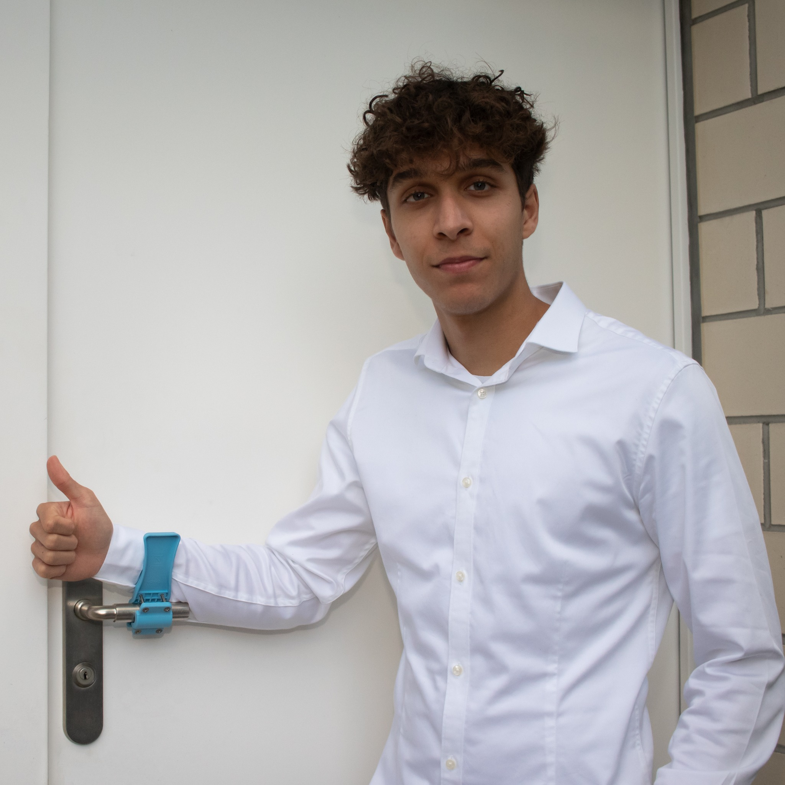
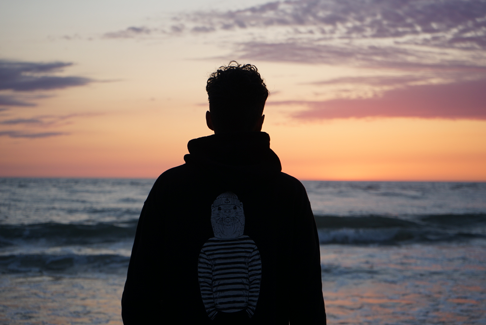
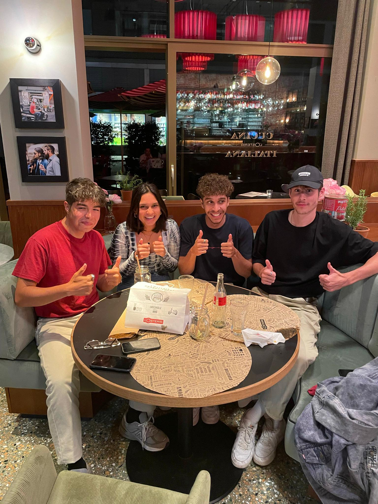

Offizielle WebsitevonDavid Burgener

Über mich
Name: David Burgener
Geburtsdatum: 21 Juni 2000
Anschrift: Mittlerestr. 27 4133 Pratteln
Nationalität: Schweizer
Studium: Digital Business Management an der Fachhochschule in Chur
Hobbys: Leichtatletik, Sport allgemein, Kochen, Fotografieren
Stärken:#1 EngagementEgal ob in der Schule, beim Leistungssport oder bei Business Projekten. Für Dinge in der mich die Begeisterung beflügelt mich, gebe ich immer 110%. Wenn ich von der Leidenschaft motiviert bin, schaffe ich oft auch das Unmögliche! Was ich auch tue, ich bringe mich immer selbst ganz ein. Mein Lieblingszitat dazu „Tu das, was du liebst, und du wirst nicht einen Tag deines Lebens arbeiten“. Ich versuche, dies jeden Tag umzusetzen, was einer meiner grössten persönlichen Stärken darstellt. #2 Initiative ergreifen Eine meiner Hauptstärken ist die Energie und die Fähigkeit, aktiv zu werden und anzufangen, wobei ich dann auch die anderen mitreisse. Keine Idee, wie ausgeklügelt sie auch sein mag, nützt etwas, wenn sie nicht in die Praxis umgesetzt wird. Aus diesem Grund versuche ich immer, neue Projekte zu starten, wie damals zu Beginn der Corona Pandemie, als ich zusammen mit meinem Gymnasium Kollegen Rolf Vollé, die Chance ergriff und Hygienische Türöffner an lokale Unternehmen verkaufte. #3 Ehrgeiz Der Ehrgeiz ist Teil von mir und ich denke auch, er ist eine meiner großen Stärken. Ich setze mir Ziele in verschiedenen Lebensbereichen, lasse mich dann von meinem Ehrgeiz anspornen und erreiche die Zielsetzungen in den meisten Fällen. Ein konkretes Beispiel dafür, wie nützlich mir das sein kann, ist zum Beispiel meine Leidenschaft Leichtathletik (800m-Lauf), wo ich mich mit kontinuierlichem Trainingsaufwand über Jahre hinweg, bis an die nationale Spitze hinaufgearbeitet habe.
Schwächen:#1 Dickköpfigkeit Eine meiner grössten Schwächen ist die Hartnäckigkeit: Es fällt mir schwer, eine einmal getroffene Entscheidung oder ein einmal fixiertes Ziel zu revidieren. Ich habe aber verstanden, wie schwierig es für mein Umfeld sein kann, damit zurechtzukommen. Deshalb versuche ich öfter auch Kompromisse zu fahren, oder bei Diskussionen auch mal nachzugeben, um ein gesundes Gleichgewicht zu bewahren.
#2 UnpünktlichkeitDa ich meistens sehr beschäftigt bin, habe ich oft Mühe damit mich an wichtige Termine zu erinnern. So kommt es öfters mal vor, dass ich viel zu spät zur Physiotherapie oder zu einem Treffen mit Freunden erscheine. Ich weiss das diese Eigenschaft sehr nervig sein kann und versuche mit Massnahmen wie Kalendern und Erinnerungsalarm dagegen vorzugehen. Sollte ich also einmal zu spät zu einem Treffen mit dir kommen, nimm es bitte nicht persönlich!
#3 Kreativität
Meine nervigste Schwäche? Oft fällt mir sogenanntes „Out-of-the-box thinking“ schwer, da ich eher analytisch veranlagt bin. Dies kann bei kreativen Aufgaben, wie zum Beispiel im Design Thinking Unterricht von Nachteil sein, wo ich mir oft Wünsche so kreativ wie andere zu sein. Naja, mit viel Anstrengung gelingt es mir meist auch die eine oder andere Idee zu entwickeln.
Ziel nach dem Studium
Mein grosses Ziel nach dem Studium, ist es eine eigene Firma im Bereich Online-Marketing aufzubauen. Sollte dies nicht funktionieren, könnte ich mir auch eine Beschäftigung in der Unternehmensberatung vorstellen. Wichtig ist mir der direkte Kontakt mit Menschen im Alltag. Mit meinem erlangten Wissen möchte ich einen möglichst grossen Impact bei lokalen Unternehmen erzielen. Ich bin zuversichtlich, dass ich dies erreichen werde und freue mich darauf was die Zukunft bringt!


Weshalb ich mich für Digital Business Management an der FH Graubünden entschieden habe…
Als mir meine Freunde Simon Brunner und Noah Bodenmüller zum ersten Mal vom Studiengang Digital Business Management erzählten, wusste ich direkt, dass dies der perfekte Studiengang für mich ist. Mein Interesse für die digitale Welt hat schon früh begonnen. Im Alter von 18 Jahren habe ich bereits einen Instagram Account mit über 30'000 Abonnenten und dazugehörigem Print-on-Demand Webshop aufgebaut. Als die Corona-Krise einsetzte, nutze ich die schulfreie Zeit und entwickelte zusammen mit einem Gymi-Kollegen den Novas-Türöffner, mit dem ich erste Erfolge im unternehmerischen Bereich erzielen konnte.

Schulische/Berufliche Laufbahn
2018/2019 Mehrere Ferienpraktika im Verkehrsingenieurbüro RK&P 2020 Gymnasiale Maturität September 2020 Gründung Einzelunternehmen Burgener Trading (E-Commerce) Oktober 2020 Vollzeit E-Commerce (selbstständig) September 2021 Studienbeginn FH Graubünden „Digital Business Management" November 2021 Gründung KIG ImmoScale (Online-Marketing-Agentur)

Sportliche Laufbahn
2017 Beginn systematischer Leistungsaufbau 800m-Lauf 2018 1. Teilnahme Schweizermeisterschaft 2019 Finalteilnahme Schweizermeisterschaft 2020 TOP 5 (CH) Persönliche Bestleistung im 600m, 800m und 1000m-Lauf 2021 Verletzungspause, Trainingsaufbau

Umfeld/Familie/Freunde
Besonders wichtig ist mir, dass neben der Schule und dem Leistungssport noch genügend Zeit für meine Familie & Freunde bleibt. Ich bin ein sehr sozialer Mensch und unternehme gerne Dinge, auch wenn dies durch die Corona Pandemie zum Teil stark eingeschränkt wurde. Ich liebe spontane (Bade-)Ausflüge und im Winter Ski/Snowboard fahren. Das Highlight dieses Jahr war ein Trip nach Vernazza und 2-wöchige Ferien in Teneriffa, unter anderem mit meinen Mitstudenten Noah und Simon. Sonst treffe ich mich gerne mit Freunden in der Stadt, im Ausgang, fürs gemeinsame Lernen, Shoppen oder beim Joggen mit meinen Trainingskollegen.
Mein Hobby: 800-m-Lauf
Meine grosse Leidenschaft ist die Leichtathletik, in der ich mich auf den 800-m-Lauf spezialisiert habe. Seit meinem 16. Lebensjahr widme ich mich dort dem täglichen Training, um am Wettkampf eine möglichst gute Leistung zu erzielen. Das Video zeigt mich an den kantonalen Meisterschaften in Riehen, wo ich mir auf den letzten Metern noch den ersten Platz ergattern konnte.
Empfehlungen
http://www.swiss-athletics.ch/
http://la-coaching-academy.de/